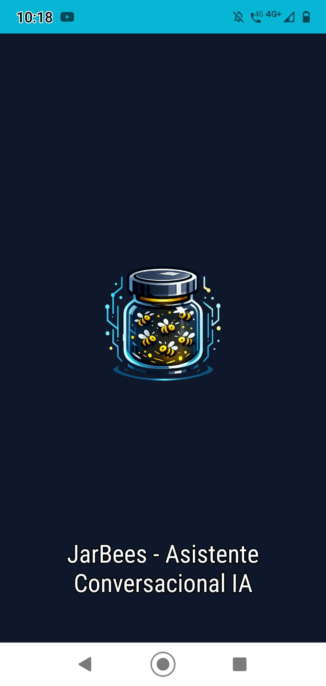
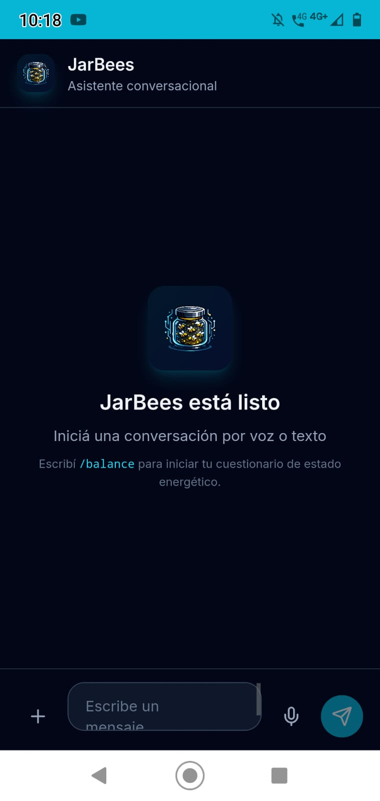
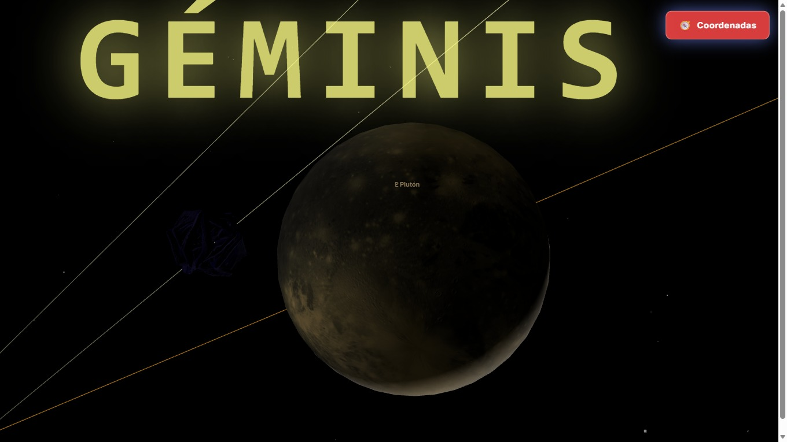
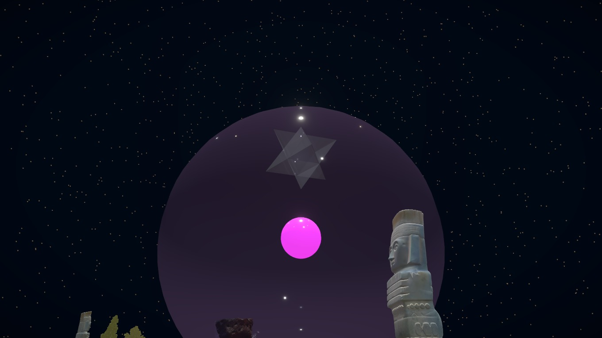
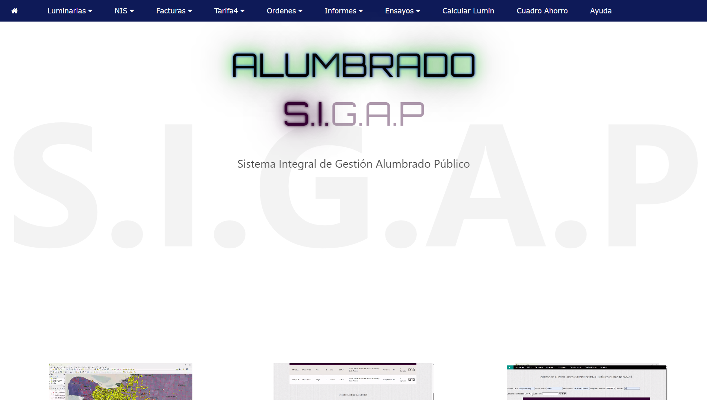
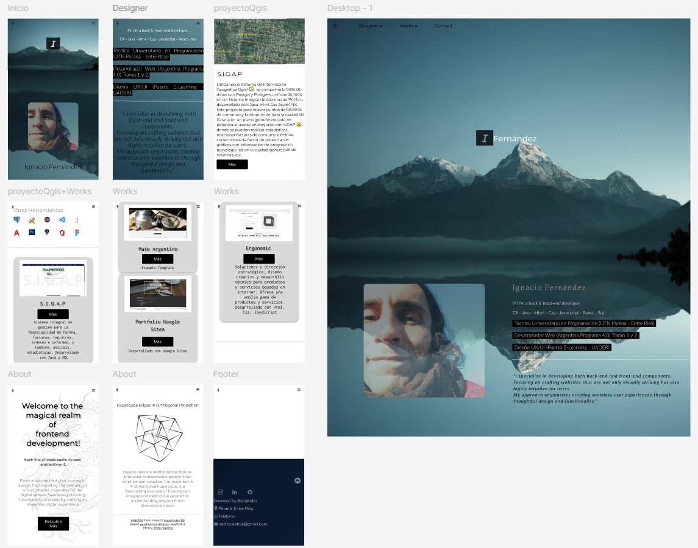
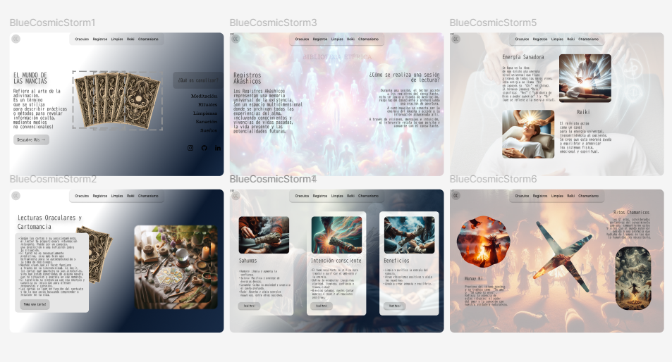
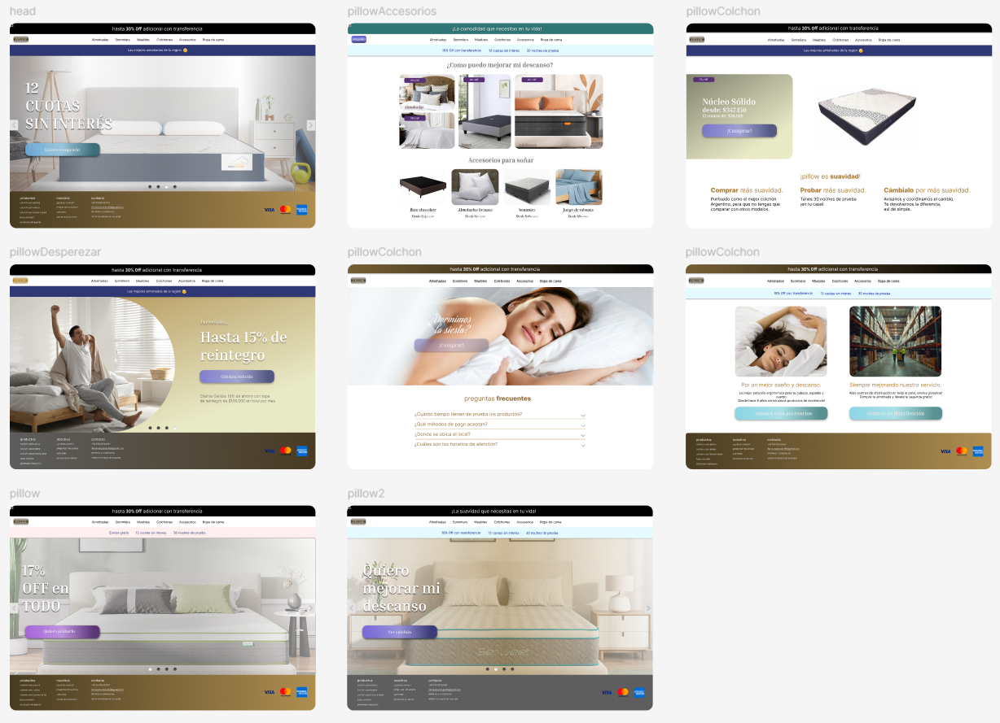

Multi-modelo
Modelos locales + cloud según la tarea.
SOFTWARE ARCHITECT · PARANÁ, ARGENTINA
Software Architect · AI Systems · Knowledge Engineering
"Diseño sistemas inteligentes que organizan conocimiento, automatizan procesos complejos y ayudan a las personas a pensar y decidir mejor."
Sistema Operativo Cognitivo Personal Adaptativo
JarBees no es un chatbot genérico. Es un asistente cognitivo local-first diseñado como un sistema operativo para automatizar tareas complejas, organizar conocimiento y estructurar el pensamiento. Opera bajo una arquitectura de software modular que se ejecuta 100% en Node.js de forma relacional con la base de datos, garantizando cero sobrecosto en llamadas adicionales.


Un motor cognitivo modular. Posee un grafo de memoria entrelazada para asociaciones no locales, un motor de incertidumbre para delimitar certidumbre y un módulo de hipótesis que genera paralelamente múltiples perspectivas de análisis con un 15% de exploración (tunelamiento cuántico) para escapar de respuestas estándar.
Procesa documentos y PDFs estructurándolos en capítulos y secciones. Cuenta con indexación asíncrona concurrente en segundo plano para PostgreSQL (pgvector). El motor Reranker pondera la relevancia léxica y semántica, mientras que EvidenceService actúa como salvaguarda contra alucinaciones del LLM midiendo la confianza en las respuestas.
Orquesta objetivos dividiéndolos en tareas secuenciales (navegación Playwright, lectura de memorias, RAG). Posee control estricto de seguridad mediante ActionExecutionGate, previniendo inyecciones de prompts indirectas y requiriendo confirmación humana (HITL) para acciones potencialmente destructivas.
El estado adaptativo de JarBees 3.0 regula sus niveles de rigor analítico y creatividad. Además, integra un sistema turn-by-turn de Balance Energético basado en ciclos temáticos, tránsitos astrológicos y reportes multidimensionales para acompañamiento personal.
[Consulta del Usuario]
↓
[Intent Router] ──(Detección e Invalidador de Intents)
↓
[CognitiveOrchestrator]
├────── (Consulta Simple / Tools) ────→ [APIs Directas / Google SDK] (0ms LLM overhead)
└────── (Consulta Compleja) ──────────┐
↓
[EpigeneticRegulator] (Modula Creatividad/Rigor)
↓
[CognitiveField] ⚡ Grafo Entrelazado (Asociación)
↓
[UncertaintyEngine] (Mide Unknowns/Certidumbre)
↓
[HypothesisEngine] (Superposición de 4 hipótesis)
↓
[InterferenceEngine] (Solapamiento RAG & Reranking)
↓
[EvidenceService] (Valida alucinaciones y colapsa)
↓
[LLM Provider] (Genera respuesta final de estado)Técnico Universitario en Programación (UTN Paraná - Entre Ríos)
Desarrollador Web (Argentina Programa 4.0)
Diseño UX/UI (Puerto E-Learning - UADER)
Stack
Especialización
⚙️ AI-Assisted Development
Implemento workflows de desarrollo asistido por IA (vibe coding), combinando editores inteligentes, múltiples modelos y estrategias de prompting para acelerar la construcción de sistemas complejos. La IA se utiliza como herramienta de aceleración, no como sustituto del criterio técnico.


Ecosistema tridimensional y cómputo arqueoastronómico
ArcheoScope nació como un **juego de exploración tridimensional para PC** con un motor de simulación celeste de alta precisión basado en algoritmos astronómicos y datos arqueoastronómicos reales. De esa base estructural surge una **versión mobile companion** para la exploración y consulta simbólica cotidiana (el cielo en tiempo real, alineaciones rituales y calendarios antiguos).
Diseñado bajo un riguroso control arquitectónico y desarrollado mediante **ingeniería asistida por IA**. Modulariza el cálculo computacional del firmamento y las posiciones planetarias en Node.js, y renderiza visualizaciones 3D fluidas en el cliente utilizando WebGL y Web Audio.
📱 MOBILE — APP DE CONSULTA & MOTOR CASCADA
🌍 Hoy — cielo en tiempo real
✨ Constelaciones — cielo nocturno
🪐 Astrología — posiciones locales
📅 Calendarios — Maya, Babilónico
🌦️ Clima — fases y transiciones
🔔 Eventos — alertas astronómicas
La raíz del proyecto — de acá nace todo el ecosistema Archeoscope.
Juego interactivo de exploración simbólica que combina visualización dinámica, lógica propia y desarrollo asistido por IA. Diseñado como experiencia lúdica, pero construido sobre un sistema modular de interacción, navegación por épocas históricas y astronomía real. El jugador explora constelaciones, calendarios ancestrales y alineaciones rituales en un universo generado proceduralmente.
Implemento flujos de vibe coding con múltiples modelos y skills reutilizables para iterar rápido sobre sistemas complejos — sin perder coherencia arquitectónica.
La IA acelera. Yo decido la arquitectura, la lógica y lo que queda.
Modelos locales + cloud según la tarea.
Generación modular y consistente.
Revisión manual + testing siempre.
Las decisiones de diseño son mías.
Diseño y desarrollo de sistemas de misión crítica y transformación digital municipal

Lideré el diseño arquitectónico y desarrollo del sistema central de gestión georeferenciada del alumbrado público de la ciudad. Diseñado para optimizar las operaciones de calle y la toma de decisiones directivas mediante dashboards analíticos en tiempo real.
Hitos técnicos de transformación digital:
⚡ Telemetría de consumo eléctrico
🗺️ Georeferenciación y GIS (PostGIS)
📦 Base de datos espacial de luminarias
📋 Reportes automáticos e inspecciones
Micro-sistemas, integraciones de conocimiento y desarrollos independientes
Sitio web interactivo con identidad visual propia enfocado en calendarios simbólicos (Maya Tzolk'in y Haab). Diseñado con micro-animaciones CSS y transiciones fluidas de navegación astronómica para una experiencia inmersiva.
Base de conocimiento estática sobre fitoterapia integrada directamente en JarvisKnowledgeService. El parseador extrae metadatos estructurados (descripción, precauciones y acciones) de archivos JSON locales para alimentar al RAG.
Estudio de experiencia de usuario aplicado a una tienda virtual. Implementa microinteracciones de alta fidelidad, animaciones para feedbacks visuales en caliente, carrito de compras dinámico y transiciones enfocadas en la retención.
UI/UX prototypes crafted in Figma



An experimental environment where I explore 3D modeling, procedural geometry and interactive real-time rendering.
⬡ 3D Modeling — GLB/GLTF assets rendered in real time on the web
⬡ Impossible geometry — optical illusions & non-euclidean structures
⬡ Symbolic representation — geometry as a language for cosmos
⬡ Interactive viewer — orbit, zoom, pan — full WebGL pipeline
These experiments feed directly into Archeoscope — testing how 3D assets, geometry and perception can be rendered in real time on the browser.
UFO — 3D MODEL · INTERACTIVE VIEWER
drag to orbit · scroll to zoom · pinch on mobile
Impossible geometry sculpture — a hexagonal structure where each face forms an optical illusion. Inspired by Escher's impossible objects and sacred geometry. 3D printed, then modeled as a GLB asset for real-time web rendering via WebGL.
Have a project in mind, want to collaborate, or just say hi? Drop me a message.
Or reach me directly: